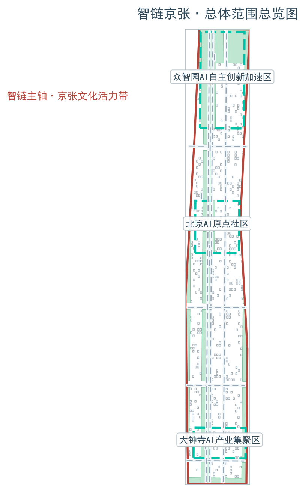
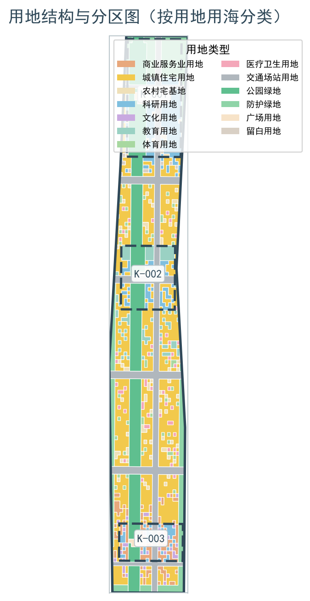
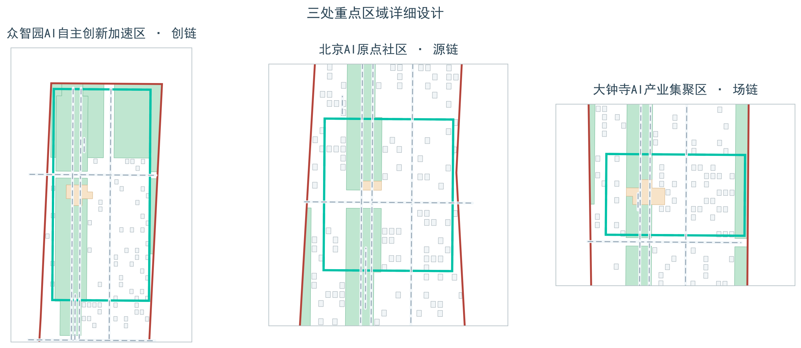
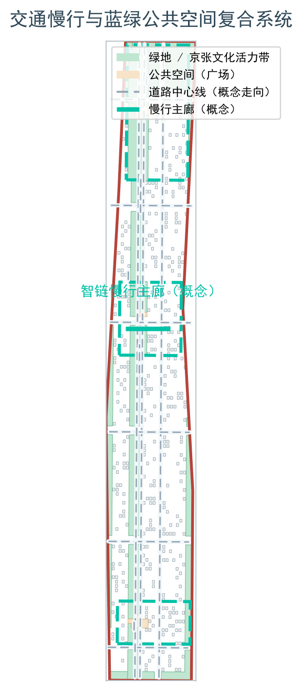
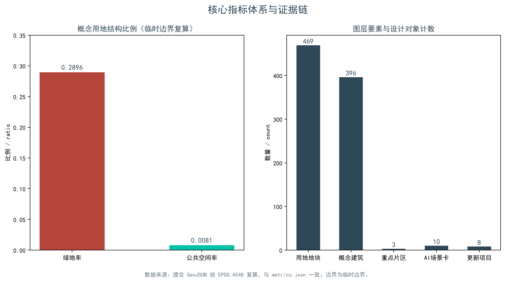

统筹研究范围
面向 43.6 平方公里提出 AI 产业生态、三区两翼协同、未来城市形态和文化叙事。
- AI创新链与人才链
- 全球案例转化机制
- 品牌命名与传播
离线电子展示成果。权威数据以 GeoJSON、metrics.json、矩阵和自检结果为准；本页把总览地图、三层范围、重点区域、用地分区、交通慢行、蓝绿公共空间、建筑与更新项目、AI 场景、核心指标、任务覆盖、自检状态、来源与假设转成人类可读的视觉说明。
总览地图将用地分区、交通慢行、蓝绿公共空间、建筑与更新项目、AI 场景节点放在同一张证据图中，便于快速理解空间主线。

方案按统筹研究范围、总体设计范围、重点区域范围递进，把产业判断、城市更新和重点片区设计绑定到图层与指标。
面向 43.6 平方公里提出 AI 产业生态、三区两翼协同、未来城市形态和文化叙事。
面向 11.4 平方公里组织城市更新、用地结构、交通市政、京张遗址公园活力带。
面向三处重点片区开展详细设计，说明功能业态、建筑更新、公共空间与交通组织。
用地依据《国土空间调查、规划、用途管制用地用海分类指南（试行）》组织，提交图层含 469 个地块，完整覆盖、无缝隙无重叠。

三处重点片区按链节定位展开：创链（众智园）、源链（AI原点社区）、场链（大钟寺），均有产业定位、空间策略、建筑与公共空间动作、交通接口和实施前置条件。

智链主轴沿京张文化活力带组织慢行主廊，蓝绿空间与公共空间、建筑与更新项目复合表达，支撑 AI 创新回路。

10 张 AI 场景卡覆盖遗产数字导览、开源协作、端侧算力、自主测试、安全治理沙盒、成果发布、数据要素展示、AI 生活服务、慢行导览与全球 AI 活动线路；每张场景卡均注明空间载体、服务对象、数据与隐私边界及人工复核。
京张铁路遗产数字孪生与 AI 导览节点。
面向开发者与高校的开源工作坊与协作空间。
公共算力便民服务与低碳设施复合节点。
低速无人配送与 L4 验证走廊（待批准测试概念）。
大模型红队评测与标准工作坊。
成果路演与发布中心。
数据要素与智能终端展示，合规授权前提。
医疗、教育、法律与生活服务集成。
无障碍导航与低侵入拥挤感知。
开发者节、场景开放日与城市体验公共线路。
指标按三类组织：空间可复算指标（来自提交 GeoJSON）、管控指标（待正式控规）、运营绩效指标（待运营数据校准）；数值、公式、来源与置信度保存在 metrics.json。

compliance_matrix.json 覆盖公告 1.3、1.4、1.5 与 agent.1-agent.6 共 23 项任务；standard_matrix.json 与 design_depth_matrix.json 分别记录标准依据与 15 项成果深度。
来源登记于 sources.json（公告、任务书、公开标准、临时边界推定记录、公开案例资料等 21 条）与 data/source_registry.json；本页不加载 CDN、远程地图瓦片、外部脚本、外部字体、API 请求或 iframe。
临时边界、待补控规、道路红线、权属、市政、文保和工程条件等 10 项假设列于 assumptions.json，正文对设计结论影响逐条说明。